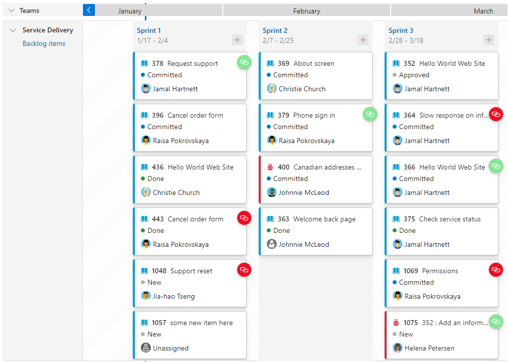
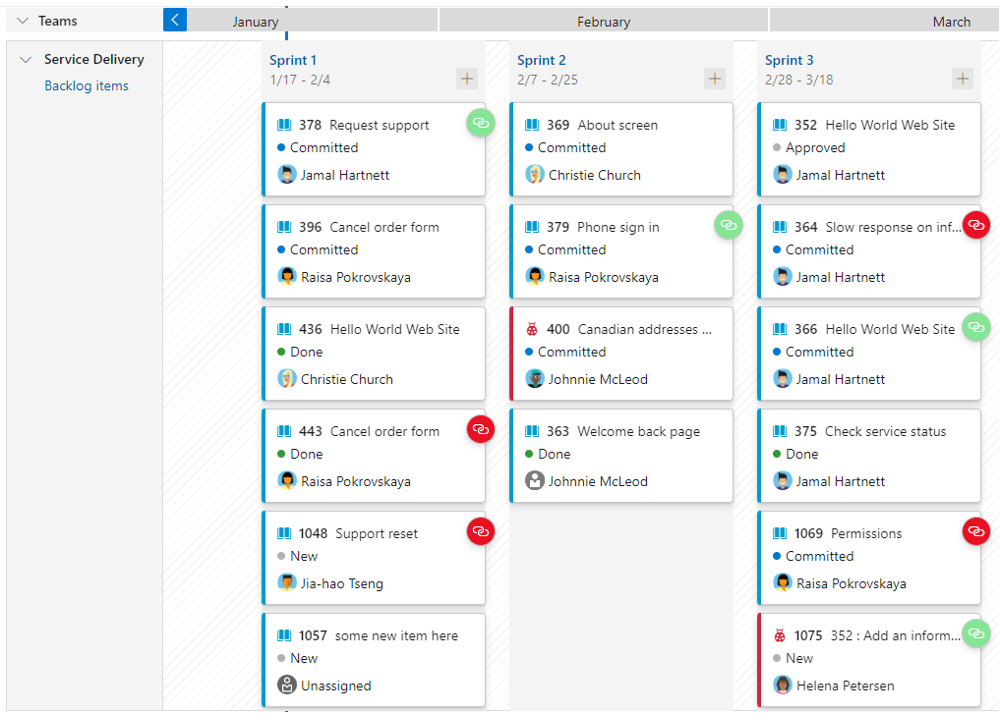

Advice for Groups
Tools
- Visual Studio Code
- Git and GitHub
- Postman
- Microsoft Teams or Discord
VS Code is a code editor that provides excellent support for Python development. It offers features like syntax highlighting, code completion, debugging, and integration with version control systems.
To incorporate this into the project, download VS Code and then open the cloned directory. VS Code should handle the file system, running from the terminal and manage Git all in the same application, streamlining the developer experience.
Git is a version control system that helps you track changes to your codebase and collaborate with other developers. It allows you to create branches, merge changes, and revert to previous versions of your code easily.
GitHub is a web-based platform that provides a collaborative environment for developers to host, manage, and version control their Git repositories, facilitating efficient collaboration, code sharing, and project management.
Songversation is currently set up on GitHub, so to incorporate Git & GitHub into the project, install git. The existing repository is already pre-configured. VS Code will also make using Git & GitHub very easy as it has built in functionality.
Postman is a tool for testing and documenting APIs. It allows you to send HTTP requests, inspect responses, and create automated test suites for your web application's API endpoints.
Postman will be incredibly useful in testing Songversation's API routes, as well as Spotify's API routes. During development, we used Postman to create sequences of API calls to ensure that the user can go from logging in, to getting lyrics for a track. We also tested Songversations API routes to ensure that Spotify Authentication was working and our application was returning the expected results.
Microsoft Teams is a collaboration platform that combines chat, video meetings, file sharing, and integration with other Microsoft tools, designed to facilitate communication and teamwork within organizations.
Discord is a communication platform, providing features such as voice chat, text messaging, and community building tools, fostering communication and interaction among its users. It's clean UI and video call capabilities makes it a good alternative to Microsoft Teams.
One of these tools should be used to facilitate communication & online meetings to inform all project members of what they should be doing and ask any questions.
Tutorials
- Miguel Grinberg's Flask Mega Tutorial
- Tech With Tim's YouTube Flask Tutorials
- Tech With Tim's Flask SocketIO Tutorial
Communication
Meetings
Ensure that regular weekly meetings are organised. If not all project members can make the meeting, consider rescheduling or allowing them to join online. It is important for all members to be updated on progress, what they should be doing and how other members are going
During the development of Songversation, we had weekly in person meetings on Tuesdays where we would check up on how each of the assigned tasks are progressing, and make sure no team member had any blockers that stopped them from doing work. We also communicated over text whenever we needed something to ensure that information flow between our group members was quick, easy and efficient and not waiting for a meeting. This allowed us to progress with the project at rapid speeds.
Task Allocation
Tools
- Azure DevOps
- GitHub Projets
 

Our Experience
During the development of Songversation, we initially used a markdown file to manage our task allocation. While it sufficed for our small 3-person project, as the team grows or the project becomes more complex, it would be advisable to use the tools listed above for improved tracking and management of task allocation and completion.
Prioritisation
When it comes to prioritising deadlines and deliverables, especially in situations where team members have competing deadlines from other units, it is essential to establish best practices to ensure efficient workflow and successful project completion. Here are some guidelines to consider:
- Clearly Define Goals and Identify Minimum Viable Product:
- Evaluate Dependencies and Constraints:
- Break Down Tasks and Set Deadlines:
- Collaborate and Communicate:
- Use Tools:
Begin by establishing a clear understanding of the project's goals and objectives. This will help prioritise tasks based on their importance.
Evaluate what your minimum viable product (MVP) is. Determine the key deliverables that are essential for the project, and work to accomplish the MVP before working on more features.
During the development of Songversation, the main requirement was to have a functional website that took in a users text input, and returned a response. From this requirement, we identified our MVP as "A webpage where the user can log in with Spotify, choose a playlist and guess which song the lyrics are from". This allowed us to quickly work towards a working product that met the requirements of the project before moving on to the more nice to have features.
Assess the dependencies and constraints associated with each task or deliverable. Identify any tasks that rely on the completion of other tasks or require specific resources or expertise. This evaluation will help determine the order in which tasks should be prioritised.
Divide complex deliverables into smaller, manageable tasks. Assign deadlines to each task, considering factors like complexity, effort required, and dependencies. This breakdown enables better tracking of progress and allows for a more efficient allocation of resources.
If team members have competing deadlines from other units, it may be necessary to negotiate and adjust deadlines to ensure a fair distribution of workload. Ensure that any adjustments are communicated clearly and fairly. This came up frequently in the Songversation Project with one of our members doing 4 assignments at once. Any dependancies they were working on had to be carefully evaluated and sometimes passed to more available group members so other group members can move on with the tasks.
Encourage open communication within the team to understand each team member's workload and competing deadlines. Ensure frequent meetings where team members can share their progress, challenges, and potential conflicts to ensure everyone is on the same page.
Utilize project management tools such as the ones listed above. These tools are specially designed in order to maximise clarity, collaboration and communication.